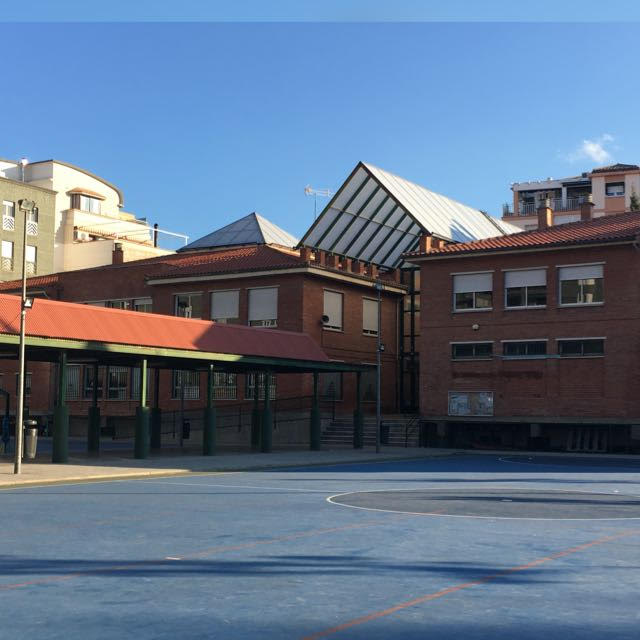

El CEIP Genil participa en programas cofinanciados por la Unión Europea y la Junta de Andalucía.
El Centro
El CEIP Genil es un colegio público de Educación Infantil y Primaria en Granada, comprometido con una educación cercana, inclusiva y de calidad para todo el alumnado.
El CEIP Genil cuenta con especialistas de Audición y Lenguaje, Pedagogía Terapéutica y PTIS, y con un aula específica (pluridiscapacidad). Es también un centro bilingüe desde el curso 2016/17.
Situado a orillas del río Genil, entre la calle San Antón y la Plaza General Emilio Herrera, el colegio fue inaugurado en 1986 y pertenece al barrio Centro-Sagrario de Granada. Escolarizamos a unos 300 alumnos y alumnas, en un ambiente de convivencia positiva y buena relación entre familias y profesorado. Desde el curso 2023/24 contamos también con un huerto escolar, en el que el alumnado aprende cuidando un espacio compartido.
Instalaciones

11 de Primaria, 4 de Infantil y 1 aula específica (pluridiscapacidad), además de aula de música.
Especialistas de Audición y Lenguaje (AL), Pedagogía Terapéutica (PT) y PTIS.
Dos pistas (baloncesto, fútbol y vóleibol) y zona de columpios para Infantil.
Comedor de usos múltiples con servicio de mediodía.
Proyecto educativo
Un centro abierto a la diversidad, donde cada alumno y alumna tiene su lugar.
Familias, profesorado y entorno trabajando juntos por la educación.
Aprender también a relacionarnos, resolver conflictos y cuidarnos.
Organización
Gloria López López
Lunes y viernes, 9:00–10:00 h · previa cita
Mª Carmen Burruezo Ordóñez
Martes y viernes, 9:00–10:00 h
Cecilia Medina Vico
Lunes a viernes, 9:00–10:00 h
Asunción Martínez
9:15–12:00 h
Organización
María Isabel González Jiménez
Sara Contreras Hidalgo
Marina Inmaculada Molina Medina
Rosa María Ramos López
Rosa María Carranza Mas
Paula Martín Quirantes
Susana Gómez Pérez
Indalecio María Sanjuán Pinilla
Concepción Sánchez Leyva
María del Mar Carmona Morán
Pablo Rejón
Víctor Manuel Cejudo Ruiz
Celia Arroyo Morales
Ana Isabel Ortega Molina
Cecilia Medina Vico
Documentos oficiales
Más sobre el centro
PROA+, Garantía Infantil, CIMA, Igualdad y otros programas cofinanciados que desarrollamos en el centro.
Nuestro proyecto de transformación educativa y social abierto a toda la comunidad.
El CEIP Genil participa en programas cofinanciados por la Unión Europea y la Junta de Andalucía.